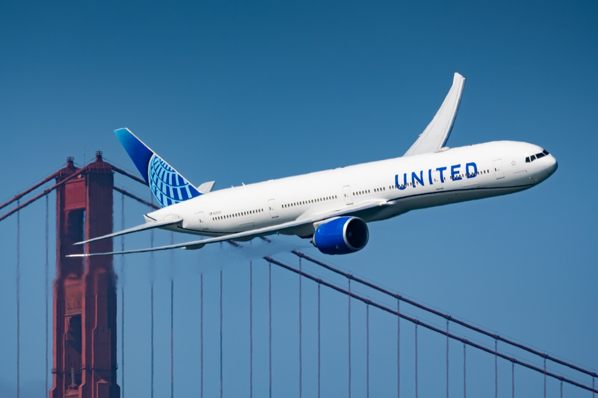
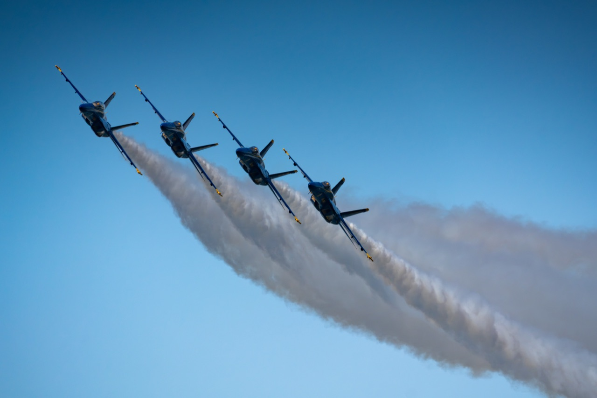
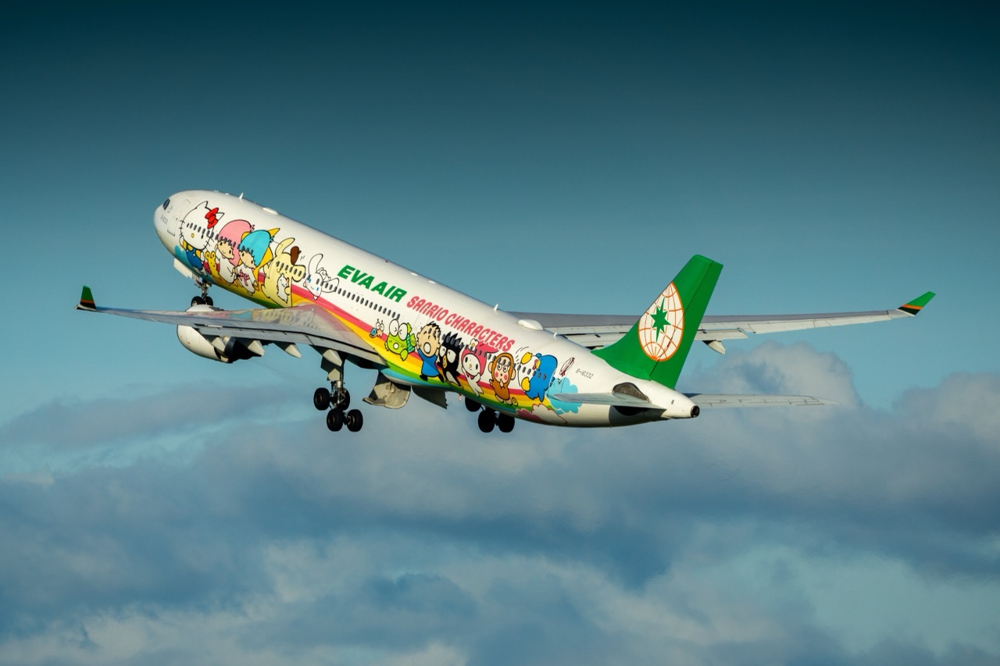
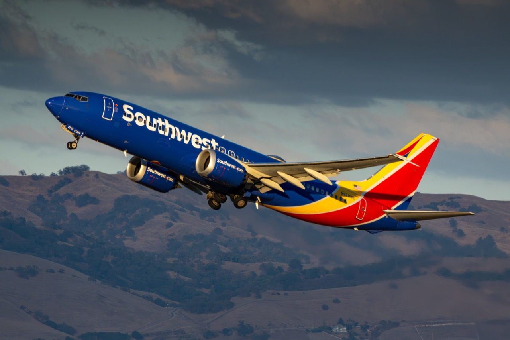
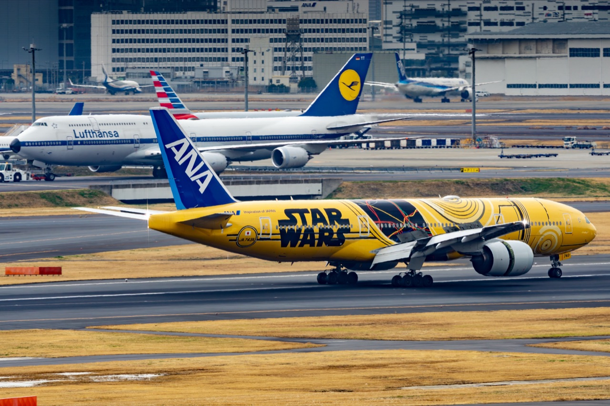
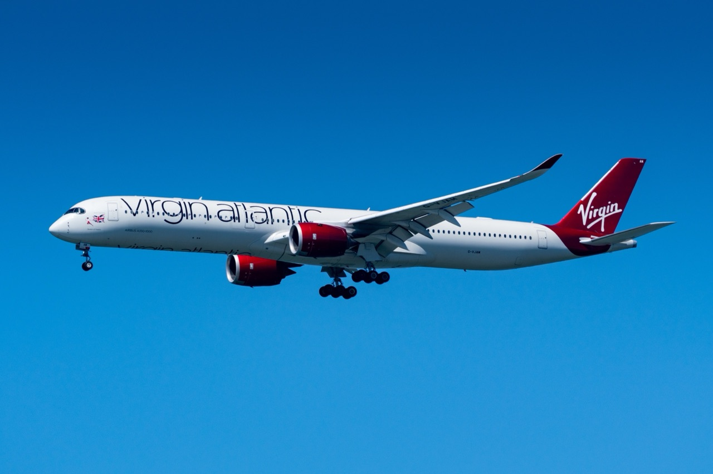
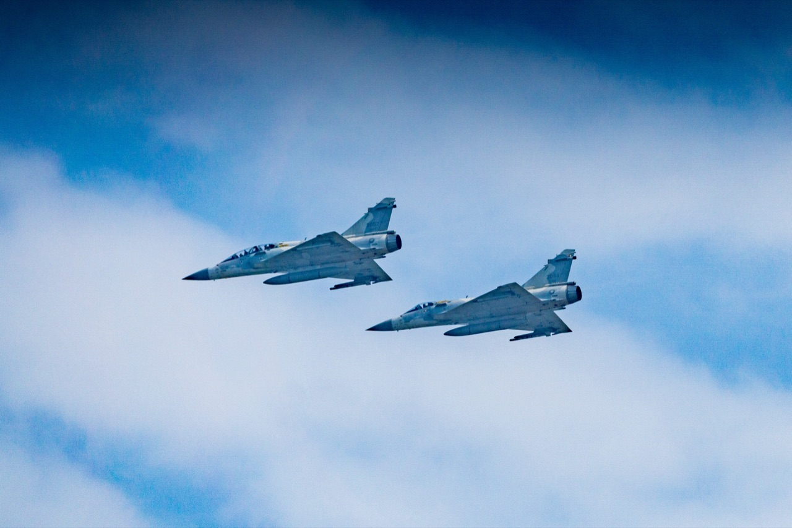
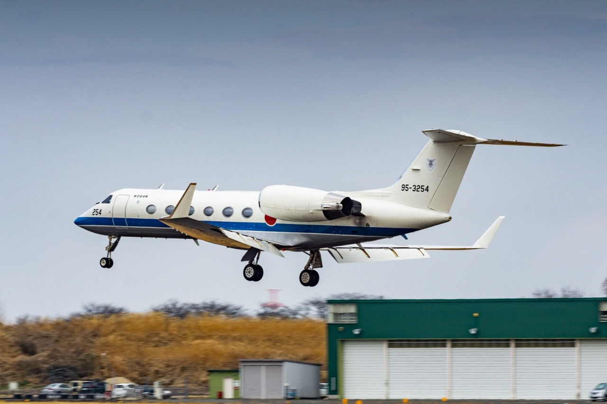

No photos match. Try a registration like B-16722 or an airline name.
🇹🇼 Taiwan Taoyuan International Airport
Taiwan's main international gateway, known for long-haul traffic, widebody operations, and a strong mix of Taiwanese and international carriers.
🇹🇼 Taipei Songshan Airport
A compact downtown airport in Taipei, especially interesting for domestic flights, business aviation, and close-in spotting with the city as backdrop.
🇹🇼 Hsinchu Air Base
A major Republic of China Air Force base and one of the most recognizable military aviation locations in northern Taiwan.
🇺🇸 San Francisco International Airport
A major West Coast gateway for transpacific and transatlantic long-haul traffic, often shaped by the Bay Area's marine layer and dramatic coastline light.
🇺🇸 Norman Y. Mineta San Jose International Airport
The South Bay's home airport in the heart of Silicon Valley, mixing domestic mainline traffic with a growing handful of transpacific and international services.
🇺🇸 San Francisco Fleet Week
An annual October air show flown along San Francisco's northern waterfront, pairing military demonstration teams and civilian aerobatics with the Golden Gate Bridge as a backdrop.
🇺🇸 Overhead
Aircraft caught high above the Bay Area, away from any airport: long-haul flights passing overhead, some at cruise altitude with contrails trailing behind.
🇯🇵 Tokyo Haneda Airport
One of Tokyo's busiest airports, with dense domestic traffic, premium international carriers, and constant runway activity throughout the day.
🇯🇵 Narita International Airport
A classic long-haul and cargo hub near Tokyo, well known among spotters for its wide variety of airlines, aircraft types, and spotting locations.
🇯🇵 Yokota Air Base
A major U.S. Air Force installation in western Tokyo, notable for heavy military aircraft and the unique atmosphere of joint-use aviation in Japan.
🇯🇵 Iruma Air Base
A Japan Air Self-Defense Force base in Saitama, known for military transport aircraft, training activity, and airshow-style viewing opportunities.